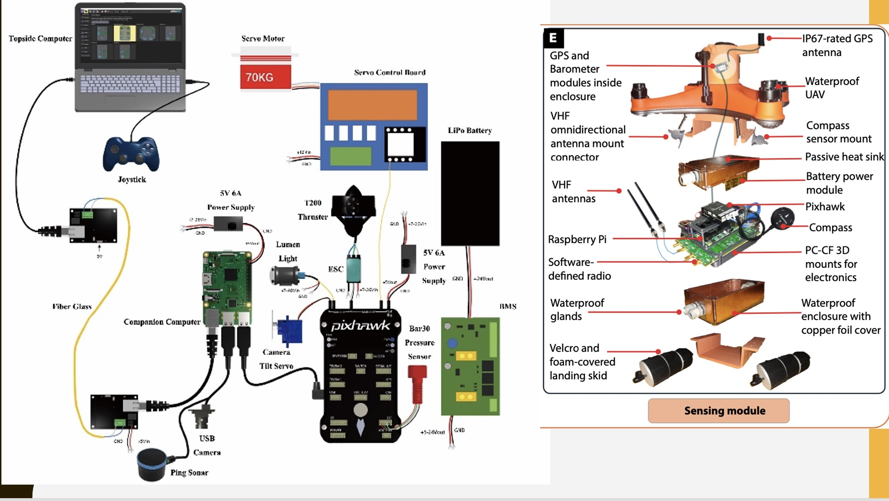

Bionic Jellyfish
Key Features
Biomimetic Design
Nature-inspired engineering:
- Mimics natural jellyfish movement
- Efficient propulsion system
- Adaptive swimming patterns
Water Purification
Advanced filtration system:
- Removes microplastics and pollutants
- Continuous water circulation
- Self-cleaning mechanism
Smart Sensors
Environmental monitoring:
- Real-time water quality detection
- Temperature and pH monitoring
- Pollution level tracking
Energy Efficiency
Sustainable operation:
- Solar-powered system
- Long-lasting battery life
- Minimal maintenance required
Technical Details

Our bionic jellyfish combines cutting-edge robotics with biomimetic design principles to create an efficient and sustainable water purification solution.
×